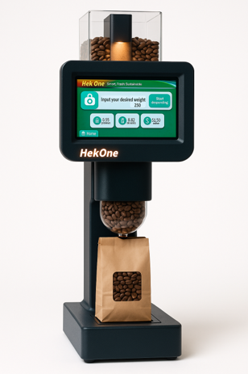

The Smart Gravity Bin is one example of how HEKONE captures real-world activity at the shelf level—
turning product movement into structured, actionable signals.
Early-stage prototype — part of a broader HEKONE instrumentation approach

The blind spot at the shelf
Product leaves the shelf without real-time tracking
Inventory updates are delayed or inaccurate
Mismatch between reported and actual consumption
Shrink and leakage go undetected
Capturing real-world consumption as a signal
Weight-based detection of product movement
Real-time signal generation
Edge-level data capture
No reliance on manual input
Part of the HEKONE system
The Smart Gravity Bin does not operate as a standalone product. It functions as a signal-generating node
within the broader HEKONE system.
Smart Gravity Bin → Signal → HEKONE Layer → Dashboard / Alerts
Why this matters
Detect real consumption vs reported inventory
Identify shrink at the source
Enable real-time replenishment decisions
Increase shelf-level accountability
Beyond a single device
HEKONE is not built around a single device or sensing method. Different environments require different
forms of instrumentation—from weight-based systems to movement tracking and entry detection.
From single point to system-wide visibility
The same principle can extend across factory, distribution, store, and shelf—creating a unified layer
of measurable operational intelligence.